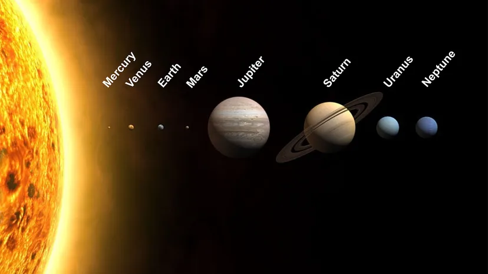

Discovering Our Cosmic Neighborhood

The Solar System is the gravitationally bound system of the Sun and the objects that orbit it. It formed 4.6 billion years ago from the gravitational collapse of a giant interstellar molecular cloud. The vast majority of the system's mass is contained in the Sun, with the majority of the remaining mass contained in Jupiter.
"To confine our attention to terrestrial matters would be to limit the human spirit." - Stephen Hawking
Key Components of the Solar System
Here are the fundamental bodies in our system:
- The Sun (Sol), our star.
- Eight major planets.
- Dwarf planets like Pluto and Ceres.
- Numerous moons, asteroids